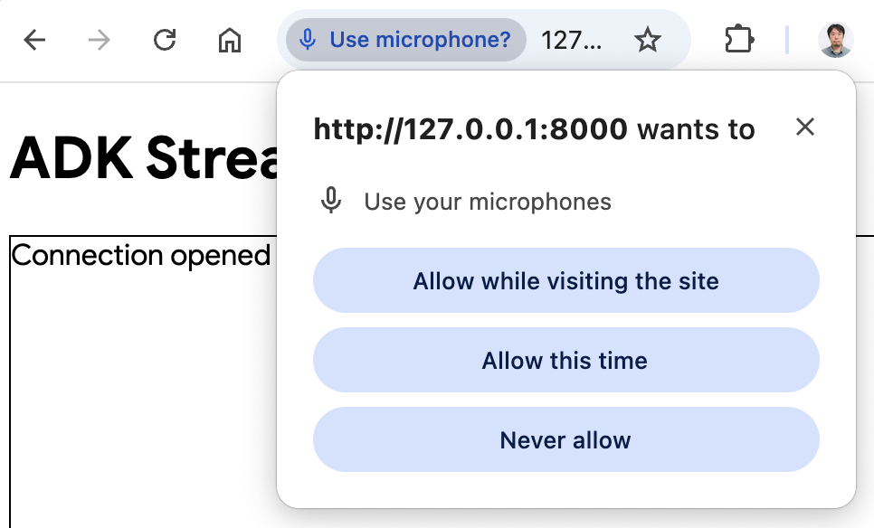

Custom Audio Streaming app (SSE)¶
This article overviews the server and client code for a custom asynchronous web app built with ADK Streaming and FastAPI, enabling real-time, bidirectional audio and text communication with Server-Sent Events (SSE). The key features are:
Server-Side (Python/FastAPI): - FastAPI + ADK integration - Server-Sent Events for real-time streaming - Session management with isolated user contexts - Support for both text and audio communication modes - Google Search tool integration for grounded responses
Client-Side (JavaScript/Web Audio API): - Real-time bidirectional communication via SSE and HTTP POST - Professional audio processing using AudioWorklet processors - Seamless mode switching between text and audio - Automatic reconnection and error handling - Base64 encoding for audio data transmission
There is also a WebSocket version of the sample is available.
1. Install ADK¶
Create & Activate Virtual Environment (Recommended):
# Create
python -m venv .venv
# Activate (each new terminal)
# macOS/Linux: source .venv/bin/activate
# Windows CMD: .venv\Scripts\activate.bat
# Windows PowerShell: .venv\Scripts\Activate.ps1
Install ADK:
Set SSL_CERT_FILE variable with the following command.
Download the sample code:
git clone --no-checkout https://github.com/google/adk-docs.git
cd adk-docs
git sparse-checkout init --cone
git sparse-checkout set examples/python/snippets/streaming/adk-streaming
git checkout main
cd examples/python/snippets/streaming/adk-streaming/app
This sample code has the following files and folders:
adk-streaming/
└── app/ # the web app folder
├── .env # Gemini API key / Google Cloud Project ID
├── main.py # FastAPI web app
├── static/ # Static content folder
| ├── js # JavaScript files folder (includes app.js)
| └── index.html # The web client page
└── google_search_agent/ # Agent folder
├── __init__.py # Python package
└── agent.py # Agent definition
2. Set up the platform¶
To run the sample app, choose a platform from either Google AI Studio or Google Cloud Vertex AI:
- Get an API key from Google AI Studio.
-
Open the
.envfile located inside (app/) and copy-paste the following code. -
Replace
PASTE_YOUR_ACTUAL_API_KEY_HEREwith your actualAPI KEY.
- You need an existing
Google Cloud account and a
project.
- Set up a Google Cloud project
- Set up the gcloud CLI
- Authenticate to Google Cloud, from the terminal by running
gcloud auth login. - Enable the Vertex AI API.
-
Open the
.envfile located inside (app/). Copy-paste the following code and update the project ID and location.
3. Interact with Your Streaming app¶
1. Navigate to the Correct Directory:
To run your agent effectively, make sure you are in the app folder (adk-streaming/app)
2. Start the Fast API: Run the following command to start CLI interface with
3. Access the app with the text mode: Once the app starts, the terminal will display a local URL (e.g., http://localhost:8000). Click this link to open the UI in your browser.
Now you should see the UI like this:

Try asking a question What time is it now?. The agent will use Google Search to respond to your queries. You would notice that the UI shows the agent's response as streaming text. You can also send messages to the agent at any time, even while the agent is still responding. This demonstrates the bidirectional communication capability of ADK Streaming.
4. Access the app with the audio mode: Now click the Start Audio button. The app reconnects with the server in an audio mode, and the UI will show the following dialog for the first time:

Click Allow while visiting the site, then you will see the microphone icon will be shown at the top of the browser:

Now you can talk to the agent with voice. Ask questions like What time is it now? with voice and you will hear the agent responding in voice too. As Streaming for ADK supports multiple languages, it can also respond to question in the supported languages.
5. Check console logs
If you are using the Chrome browser, use the right click and select Inspect to open the DevTools. On the Console, you can see the incoming and outgoing audio data such as [CLIENT TO AGENT] and [AGENT TO CLIENT], representing the audio data streaming in and out between the browser and the server.
At the same time, in the app server console, you should see something like this:
Client #90766266 connected via SSE, audio mode: false
INFO: 127.0.0.1:52692 - "GET /events/90766266?is_audio=false HTTP/1.1" 200 OK
[CLIENT TO AGENT]: hi
INFO: 127.0.0.1:52696 - "POST /send/90766266 HTTP/1.1" 200 OK
[AGENT TO CLIENT]: text/plain: {'mime_type': 'text/plain', 'data': 'Hi'}
[AGENT TO CLIENT]: text/plain: {'mime_type': 'text/plain', 'data': ' there! How can I help you today?\n'}
[AGENT TO CLIENT]: {'turn_complete': True, 'interrupted': None}
These console logs are important in case you develop your own streaming application. In many cases, the communication failure between the browser and server becomes a major cause for the streaming application bugs.
6. Troubleshooting tips
- When your browser can't connect to the server via SSH proxy: SSH proxy used in various cloud services may not work with SSE. Please try without SSH proxy, such as using a local laptop, or try the WebSocket version.
- When
gemini-2.0-flash-expmodel doesn't work: If you see any errors on the app server console with regard togemini-2.0-flash-expmodel availability, try replacing it withgemini-2.0-flash-live-001onapp/google_search_agent/agent.pyat line 6.
4. Agent definition¶
The agent definition code agent.py in the google_search_agent folder is where the agent's logic is written:
from google.adk.agents import Agent
from google.adk.tools import google_search # Import the tool
root_agent = Agent(
name="google_search_agent",
model="gemini-2.0-flash-exp", # if this model does not work, try below
#model="gemini-2.0-flash-live-001",
description="Agent to answer questions using Google Search.",
instruction="Answer the question using the Google Search tool.",
tools=[google_search],
)
Notice how easily you integrated grounding with Google Search capabilities. The Agent class and the google_search tool handle the complex interactions with the LLM and grounding with the search API, allowing you to focus on the agent's purpose and behavior.

The server and client architecture enables real-time, bidirectional communication between web clients and AI agents with proper session isolation and resource management.
5. Server side code overview¶
The FastAPI server provides real-time communication between web clients and the AI agent.
Bidirectional communication overview¶
Client-to-Agent Flow:¶
- Connection Establishment - Client opens SSE connection to
/events/{user_id}, triggering session creation and storing request queue inactive_sessions - Message Transmission - Client sends POST to
/send/{user_id}with JSON payload containingmime_typeanddata - Queue Processing - Server retrieves session's
live_request_queueand forwards message to agent viasend_content()orsend_realtime()
Agent-to-Client Flow:¶
- Event Generation - Agent processes requests and generates events through
live_eventsasync generator - Stream Processing -
agent_to_client_sse()filters events and formats them as SSE-compatible JSON - Real-time Delivery - Events stream to client via persistent HTTP connection with proper SSE headers
Session Management:¶
- Per-User Isolation - Each user gets unique session stored in
active_sessionsdict - Lifecycle Management - Sessions auto-cleanup on disconnect with proper resource disposal
- Concurrent Support - Multiple users can have simultaneous active sessions
Error Handling:¶
- Session Validation - POST requests validate session existence before processing
- Stream Resilience - SSE streams handle exceptions and perform cleanup automatically
- Connection Recovery - Clients can reconnect by re-establishing SSE connection
Agent Session Management¶
The start_agent_session() function creates isolated AI agent sessions:
async def start_agent_session(user_id, is_audio=False):
"""Starts an agent session"""
# Create a Runner
runner = InMemoryRunner(
app_name=APP_NAME,
agent=root_agent,
)
# Create a Session
session = await runner.session_service.create_session(
app_name=APP_NAME,
user_id=user_id, # Replace with actual user ID
)
# Set response modality
modality = "AUDIO" if is_audio else "TEXT"
run_config = RunConfig(response_modalities=[modality])
# Create a LiveRequestQueue for this session
live_request_queue = LiveRequestQueue()
# Start agent session
live_events = runner.run_live(
session=session,
live_request_queue=live_request_queue,
run_config=run_config,
)
return live_events, live_request_queue
-
InMemoryRunner Setup - Creates a runner instance that manages the agent lifecycle in memory, with the app name "ADK Streaming example" and the Google Search agent.
-
Session Creation - Uses
runner.session_service.create_session()to establish a unique session per user ID, enabling multiple concurrent users. -
Response Modality Configuration - Sets
RunConfigwith either "AUDIO" or "TEXT" modality based on theis_audioparameter, determining output format. -
LiveRequestQueue - Creates a bidirectional communication channel that queues incoming requests and enables real-time message passing between client and agent.
-
Live Events Stream -
runner.run_live()returns an async generator that yields real-time events from the agent, including partial responses, turn completions, and interruptions.
Server-Sent Events (SSE) Streaming¶
The agent_to_client_sse() function handles real-time streaming from agent to client:
async def agent_to_client_sse(live_events):
"""Agent to client communication via SSE"""
async for event in live_events:
# If the turn complete or interrupted, send it
if event.turn_complete or event.interrupted:
message = {
"turn_complete": event.turn_complete,
"interrupted": event.interrupted,
}
yield f"data: {json.dumps(message)}\n\n"
print(f"[AGENT TO CLIENT]: {message}")
continue
# Read the Content and its first Part
part: Part = (
event.content and event.content.parts and event.content.parts[0]
)
if not part:
continue
# If it's audio, send Base64 encoded audio data
is_audio = part.inline_data and part.inline_data.mime_type.startswith("audio/pcm")
if is_audio:
audio_data = part.inline_data and part.inline_data.data
if audio_data:
message = {
"mime_type": "audio/pcm",
"data": base64.b64encode(audio_data).decode("ascii")
}
yield f"data: {json.dumps(message)}\n\n"
print(f"[AGENT TO CLIENT]: audio/pcm: {len(audio_data)} bytes.")
continue
# If it's text and a parial text, send it
if part.text and event.partial:
message = {
"mime_type": "text/plain",
"data": part.text
}
yield f"data: {json.dumps(message)}\n\n"
print(f"[AGENT TO CLIENT]: text/plain: {message}")
-
Event Processing Loop - Iterates through
live_eventsasync generator, processing each event as it arrives from the agent. -
Turn Management - Detects conversation turn completion or interruption events and sends JSON messages with
turn_completeandinterruptedflags to signal conversation state changes. -
Content Part Extraction - Extracts the first
Partfrom event content, which contains either text or audio data. -
Audio Streaming - Handles PCM audio data by:
- Detecting
audio/pcmMIME type ininline_data - Base64 encoding raw audio bytes for JSON transmission
-
Sending with
mime_typeanddatafields -
Text Streaming - Processes partial text responses by sending incremental text updates as they're generated, enabling real-time typing effects.
-
SSE Format - All data is formatted as
data: {json}\n\nfollowing SSE specification for browser EventSource API compatibility.
HTTP Endpoints and Routing¶
Root Endpoint¶
GET / - Serves static/index.html as the main application interface using FastAPI's FileResponse.
SSE Events Endpoint¶
@app.get("/events/{user_id}")
async def sse_endpoint(user_id: int, is_audio: str = "false"):
"""SSE endpoint for agent to client communication"""
# Start agent session
user_id_str = str(user_id)
live_events, live_request_queue = await start_agent_session(user_id_str, is_audio == "true")
# Store the request queue for this user
active_sessions[user_id_str] = live_request_queue
print(f"Client #{user_id} connected via SSE, audio mode: {is_audio}")
def cleanup():
live_request_queue.close()
if user_id_str in active_sessions:
del active_sessions[user_id_str]
print(f"Client #{user_id} disconnected from SSE")
async def event_generator():
try:
async for data in agent_to_client_sse(live_events):
yield data
except Exception as e:
print(f"Error in SSE stream: {e}")
finally:
cleanup()
return StreamingResponse(
event_generator(),
media_type="text/event-stream",
headers={
"Cache-Control": "no-cache",
"Connection": "keep-alive",
"Access-Control-Allow-Origin": "*",
"Access-Control-Allow-Headers": "Cache-Control"
}
)
GET /events/{user_id} - Establishes persistent SSE connection:
-
Parameters - Takes
user_id(int) and optionalis_audioquery parameter (defaults to "false") -
Session Initialization - Calls
start_agent_session()and stores thelive_request_queueinactive_sessionsdict usinguser_idas key -
StreamingResponse - Returns
StreamingResponsewith: event_generator()async function that wrapsagent_to_client_sse()- MIME type:
text/event-stream - CORS headers for cross-origin access
-
Cache-control headers to prevent caching
-
Cleanup Logic - Handles connection termination by closing the request queue and removing from active sessions, with error handling for stream interruptions.
Message Sending Endpoint¶
@app.post("/send/{user_id}")
async def send_message_endpoint(user_id: int, request: Request):
"""HTTP endpoint for client to agent communication"""
user_id_str = str(user_id)
# Get the live request queue for this user
live_request_queue = active_sessions.get(user_id_str)
if not live_request_queue:
return {"error": "Session not found"}
# Parse the message
message = await request.json()
mime_type = message["mime_type"]
data = message["data"]
# Send the message to the agent
if mime_type == "text/plain":
content = Content(role="user", parts=[Part.from_text(text=data)])
live_request_queue.send_content(content=content)
print(f"[CLIENT TO AGENT]: {data}")
elif mime_type == "audio/pcm":
decoded_data = base64.b64decode(data)
live_request_queue.send_realtime(Blob(data=decoded_data, mime_type=mime_type))
print(f"[CLIENT TO AGENT]: audio/pcm: {len(decoded_data)} bytes")
else:
return {"error": f"Mime type not supported: {mime_type}"}
return {"status": "sent"}
POST /send/{user_id} - Receives client messages:
-
Session Lookup - Retrieves
live_request_queuefromactive_sessionsor returns error if session doesn't exist -
Message Processing - Parses JSON with
mime_typeanddatafields: - Text Messages - Creates
ContentwithPart.from_text()and sends viasend_content() -
Audio Messages - Base64 decodes PCM data and sends via
send_realtime()withBlob -
Error Handling - Returns appropriate error responses for unsupported MIME types or missing sessions.
6. Client side code overview¶
The client-side consists of a web interface with real-time communication and audio capabilities:
HTML Interface (static/index.html)¶
<!doctype html>
<html>
<head>
<title>ADK Streaming Test (Audio)</title>
<script src="/static/js/app.js" type="module"></script>
</head>
<body>
<h1>ADK Streaming Test</h1>
<div
id="messages"
style="height: 300px; overflow-y: auto; border: 1px solid black"></div>
<br />
<form id="messageForm">
<label for="message">Message:</label>
<input type="text" id="message" name="message" />
<button type="submit" id="sendButton" disabled>Send</button>
<button type="button" id="startAudioButton">Start Audio</button>
</form>
</body>
</html>
Simple web interface with: - Messages Display - Scrollable div for conversation history - Text Input Form - Input field and send button for text messages - Audio Control - Button to enable audio mode and microphone access
Main Application Logic (static/js/app.js)¶
Session Management (app.js)¶
const sessionId = Math.random().toString().substring(10);
const sse_url =
"http://" + window.location.host + "/events/" + sessionId;
const send_url =
"http://" + window.location.host + "/send/" + sessionId;
let is_audio = false;
- Random Session ID - Generates unique session ID for each browser instance
- URL Construction - Builds SSE and send endpoints with session ID
- Audio Mode Flag - Tracks whether audio mode is enabled
Server-Sent Events Connection (app.js)¶
connectSSE() function handles real-time server communication:
// SSE handlers
function connectSSE() {
// Connect to SSE endpoint
eventSource = new EventSource(sse_url + "?is_audio=" + is_audio);
// Handle connection open
eventSource.onopen = function () {
// Connection opened messages
console.log("SSE connection opened.");
document.getElementById("messages").textContent = "Connection opened";
// Enable the Send button
document.getElementById("sendButton").disabled = false;
addSubmitHandler();
};
// Handle incoming messages
eventSource.onmessage = function (event) {
...
};
// Handle connection close
eventSource.onerror = function (event) {
console.log("SSE connection error or closed.");
document.getElementById("sendButton").disabled = true;
document.getElementById("messages").textContent = "Connection closed";
eventSource.close();
setTimeout(function () {
console.log("Reconnecting...");
connectSSE();
}, 5000);
};
}
- EventSource Setup - Creates SSE connection with audio mode parameter
- Connection Handlers:
- onopen - Enables send button and form submission when connected
- onmessage - Processes incoming messages from agent
- onerror - Handles disconnections with auto-reconnect after 5 seconds
Message Processing (app.js)¶
Handles different message types from server:
// Handle incoming messages
eventSource.onmessage = function (event) {
// Parse the incoming message
const message_from_server = JSON.parse(event.data);
console.log("[AGENT TO CLIENT] ", message_from_server);
// Check if the turn is complete
// if turn complete, add new message
if (
message_from_server.turn_complete &&
message_from_server.turn_complete == true
) {
currentMessageId = null;
return;
}
// If it's audio, play it
if (message_from_server.mime_type == "audio/pcm" && audioPlayerNode) {
audioPlayerNode.port.postMessage(base64ToArray(message_from_server.data));
}
// If it's a text, print it
if (message_from_server.mime_type == "text/plain") {
// add a new message for a new turn
if (currentMessageId == null) {
currentMessageId = Math.random().toString(36).substring(7);
const message = document.createElement("p");
message.id = currentMessageId;
// Append the message element to the messagesDiv
messagesDiv.appendChild(message);
}
// Add message text to the existing message element
const message = document.getElementById(currentMessageId);
message.textContent += message_from_server.data;
// Scroll down to the bottom of the messagesDiv
messagesDiv.scrollTop = messagesDiv.scrollHeight;
}
- Turn Management - Detects
turn_completeto reset message state - Audio Playback - Decodes Base64 PCM data and sends to audio worklet
- Text Display - Creates new message elements and appends partial text updates for real-time typing effect
Message Sending (app.js)¶
sendMessage() function sends data to server:
async function sendMessage(message) {
try {
const response = await fetch(send_url, {
method: 'POST',
headers: {
'Content-Type': 'application/json',
},
body: JSON.stringify(message)
});
if (!response.ok) {
console.error('Failed to send message:', response.statusText);
}
} catch (error) {
console.error('Error sending message:', error);
}
}
- HTTP POST - Sends JSON payload to
/send/{session_id}endpoint - Error Handling - Logs failed requests and network errors
- Message Format - Standardized
{mime_type, data}structure
Audio Player (static/js/audio-player.js)¶
startAudioPlayerWorklet() function:
- AudioContext Setup - Creates context with 24kHz sample rate for playback
- Worklet Loading - Loads PCM player processor for audio handling
- Audio Pipeline - Connects worklet node to audio destination (speakers)
Audio Recorder (static/js/audio-recorder.js)¶
startAudioRecorderWorklet() function:
- AudioContext Setup - Creates context with 16kHz sample rate for recording
- Microphone Access - Requests user media permissions for audio input
- Audio Processing - Connects microphone to recorder worklet
- Data Conversion - Converts Float32 samples to 16-bit PCM format
Audio Worklet Processors¶
PCM Player Processor (static/js/pcm-player-processor.js)¶
PCMPlayerProcessor class handles audio playback:
- Ring Buffer - Circular buffer for 180 seconds of 24kHz audio
- Data Ingestion - Converts Int16 to Float32 and stores in buffer
- Playback Loop - Continuously reads from buffer to output channels
- Overflow Handling - Overwrites oldest samples when buffer is full
PCM Recorder Processor (static/js/pcm-recorder-processor.js)¶
PCMProcessor class captures microphone input:
- Audio Input - Processes incoming audio frames
- Data Transfer - Copies Float32 samples and posts to main thread via message port
Mode Switching:¶
- Audio Activation - "Start Audio" button enables microphone and reconnects SSE with audio flag
- Seamless Transition - Closes existing connection and establishes new audio-enabled session
The client architecture enables seamless real-time communication with both text and audio modalities, using modern web APIs for professional-grade audio processing.
Summary¶
This application demonstrates a complete real-time AI agent system with the following key features:
Architecture Highlights: - Real-time: Streaming responses with partial text updates and continuous audio - Robust: Comprehensive error handling and automatic recovery mechanisms - Modern: Uses latest web standards (AudioWorklet, SSE, ES6 modules)
The system provides a foundation for building sophisticated AI applications that require real-time interaction, web search capabilities, and multimedia communication.
Next steps for production¶
To deploy this system in a production environment, consider implementing the following improvements:
Security¶
- Authentication: Replace random session IDs with proper user authentication
- API Key Security: Use environment variables or secret management services
- HTTPS: Enforce TLS encryption for all communications
- Rate Limiting: Prevent abuse and control API costs
Scalability¶
- Persistent Storage: Replace in-memory sessions with a persistent session
- Load Balancing: Support multiple server instances with shared session state
- Audio Optimization: Implement compression to reduce bandwidth usage
Monitoring¶
- Error Tracking: Monitor and alert on system failures
- API Cost Monitoring: Track Google Search and Gemini usage to prevent budget overruns
- Performance Metrics: Monitor response times and audio latency
Infrastructure¶
- Containerization: Package with Docker for consistent deployments with Cloud Run or Agent Engine
- Health Checks: Implement endpoint monitoring for uptime tracking